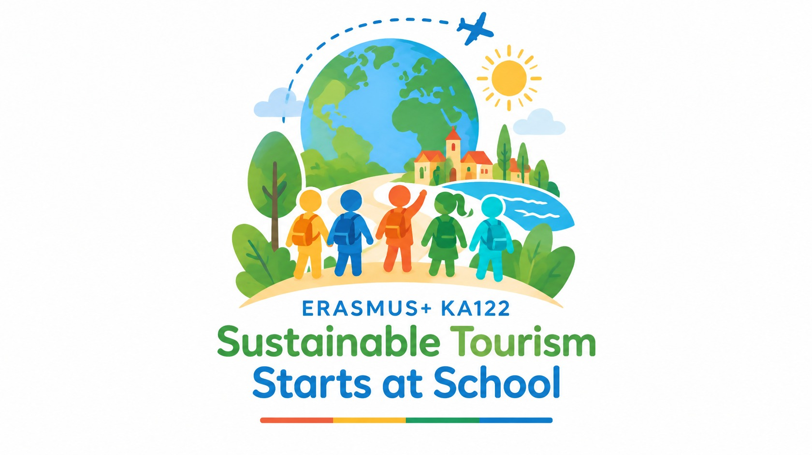
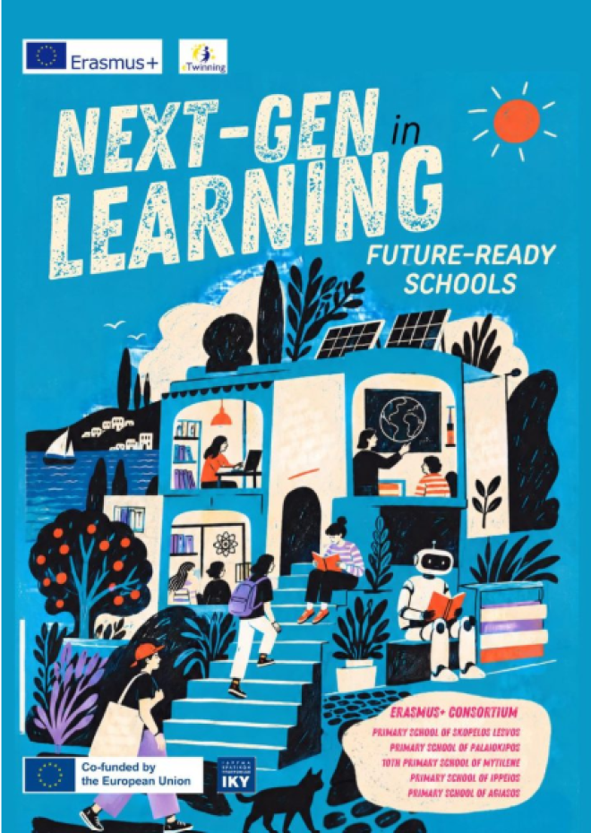

Συνεργασία μαθητών
Έργα eTwinning
Δύο ανοιχτά παράθυρα επικοινωνίας: με κοινές εργασίες, ιδέες και δημιουργίες που ταξιδεύουν από τάξη σε τάξη.
Sustainable Tourism Starts at School
Οι μαθητές γίνονται υπεύθυνοι επισκέπτες και αφηγητές του τόπου τους. Συζητούν για τη φύση, την πολιτιστική κληρονομιά και τις επιλογές που κάνουν έναν προορισμό φιλόξενο για όλους.
Ξεκινάμε με το Mystery Classroom και τις μαθητικές δημιουργίες για το λογότυπο. Στη συνέχεια, οι κοινές αποστολές μας εξερευνούν τον υπεύθυνο επισκέπτη, τον πολιτισμό και την ευρωπαϊκή φιλοξενία.
Η πραγματική συνεργασία εξελίσσεται στο TwinSpace. Εδώ μοιραζόμαστε με τη σχολική κοινότητα επιλεγμένα αποτελέσματα και στιγμές που επιτρέπεται να δημοσιευτούν.

Next-Gen Learning in Future-Ready Schools
Στο «Next-Gen Learning in Future-Ready Schools» αναζητούμε νέους τρόπους να μαθαίνουμε, να δημιουργούμε και να συνεργαζόμαστε. Το έργο συνδέεται με τα σχολεία της κοινοπραξίας KA121, με συντονιστή το Δημοτικό Σχολείο Σκοπέλου.
Η αφίσα του έργου παρουσιάζει τη συνεργασία μας γύρω από το σχολείο του αύριο.
